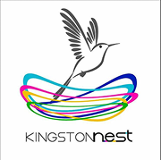

Stay Informed, Directly From Your Feed.
We're on a mission to give social media users the tools they need to stay informed, directly from their feed. CONTXTRA is developing a news aggregator for news-engaged social media users, allowing them to stay informed, directly from their feed. Our bespoke AI model analyses the content of a social media post, identifies its topic and gathers relevant news articles for the user to explore. CONTXTRA eliminates the need to manually find articles, offering an effortless approach to news engagement and fact-checking, while allowing users to freely explore articles of their choice. We are currently testing our MVP with X and Bluesky users, which allows them to paste a post's URL into CONTXTRA's web app to receive relevant news articles.
In Partnership With
